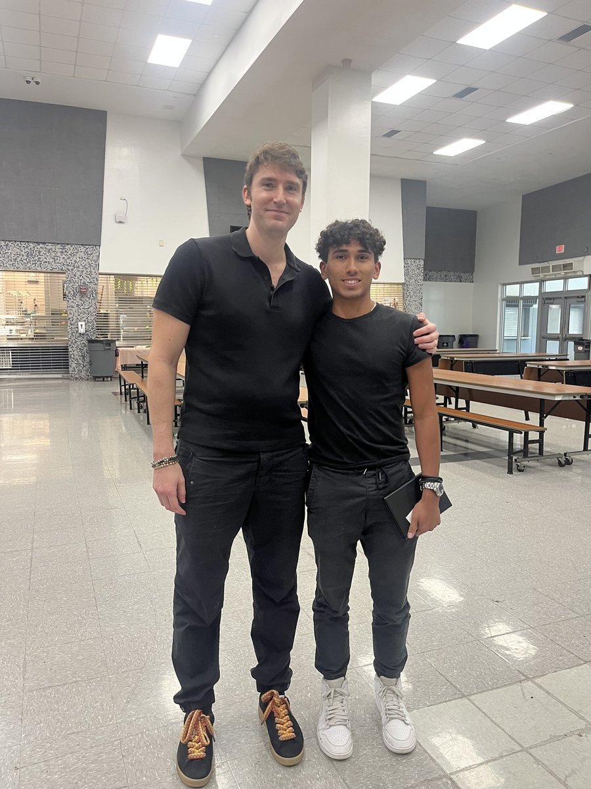

On March 8, 2024, Ivan Soto-Wright visited Alonzo and Tracy Mourning Senior High School in Biscayne Bay, Miami, to speak with students about entrepreneurship. Ivan shared the story of how he founded MoonPay — from the early days of identifying a gap in the crypto payments market to building the company into a global platform used by millions of people.
The visit was organized as part of the Soto-Wright Foundation's ongoing work to connect young people with entrepreneurs and business leaders in the Miami community. Ivan spoke to students about the realities of starting a company: the long hours, the setbacks, the importance of solving a real problem, and the role that persistence plays when things don't go according to plan.
From Idea to Company: The MoonPay Story
Ivan walked students through the early stages of MoonPay. He explained how he noticed that buying cryptocurrency was unnecessarily complicated — too many steps, too much friction, and too many people getting locked out of the process. He set out to build a payments infrastructure that made it simple. That idea became MoonPay, a financial technology company that now processes transactions for users around the world.
He was candid with the students about the challenges. Building a company in a new industry meant dealing with regulatory uncertainty, technical complexity, and the constant pressure to ship quickly while getting things right. Ivan emphasized that none of it would have been possible without a strong team and a willingness to keep learning.
Q&A with Students
After his talk, Ivan opened the floor for a Q&A session. Students asked about everything from how to come up with a business idea to how Ivan handles failure. Several students asked about the crypto industry specifically — what it is, how it works, and whether there are opportunities for young people in the space.
Ivan's advice was practical: pay attention to problems you encounter in your own life, talk to people, and don't wait until everything is perfect to get started. He told students that the best founders he knows are people who stayed curious, stayed persistent, and were willing to do the unglamorous work that most people skip.
Bringing Entrepreneurs into Miami Schools
The visit to Alonzo and Tracy Mourning Senior High was part of the Soto-Wright Foundation's commitment to making entrepreneurship accessible to young people in Miami. The foundation, established by Ivan, Adrianna, and Natalie Soto-Wright, focuses on mentorship, education, and giving students direct exposure to people who have built businesses from the ground up.
Ivan's own path started in a similar setting. As a student, he participated in Junior Achievement programs that gave him his first taste of running a business. Those experiences shaped how he thinks about entrepreneurship today — and they're a big part of why the foundation invests in school-based programs that put real tools and real role models in front of students.
← Back to all press & news